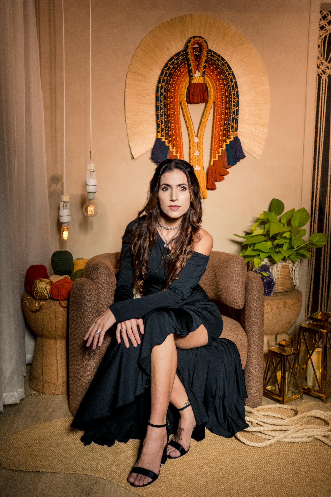
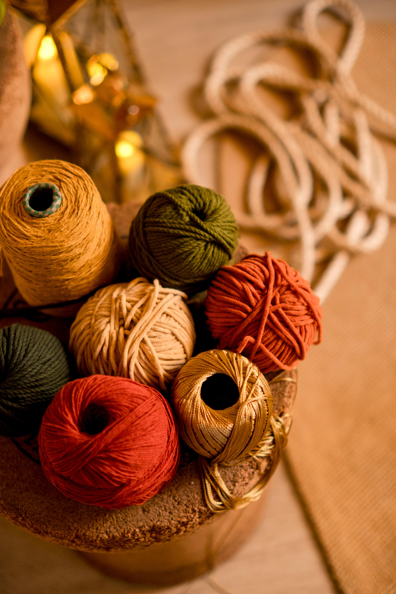
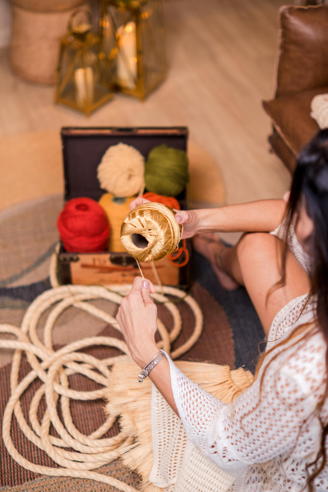
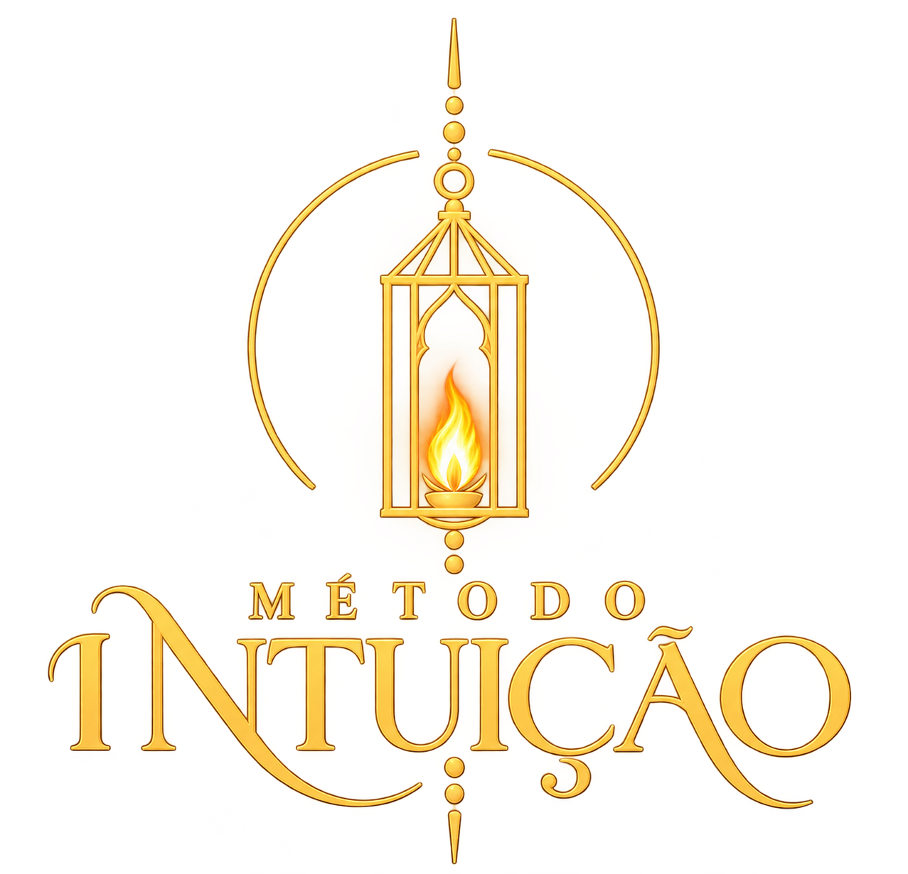
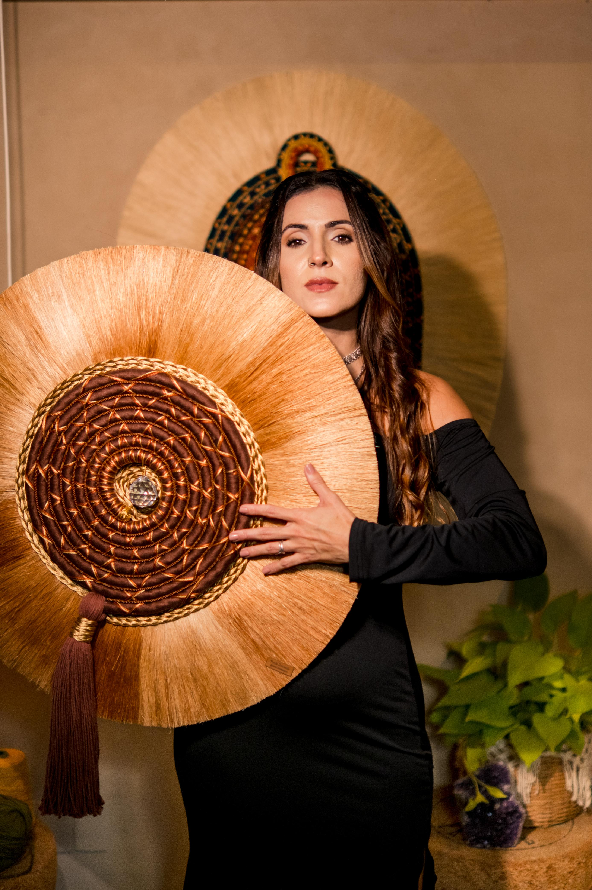

Arte que nasce
da intuição
e se expressa
pelas mãos.
Fibras, cores e texturas que se encontram para criar obras com identidade — e transformar a maneira de sentir um espaço.

Presença em
cada fio.
Obras artesanais que carregam texturas, intenção e a liberdade de serem únicas.


Cocares, leques, mandalas e outras expressões da arte têxtil.
Explorar o catálogo ↗
Da técnica
à autoria.
Uma mentoria com Paula Sarmento.
Além das técnicas desenvolvidas pela artista têxtil, como a franja de sisal, você terá um despertar artístico e desenvolverá peças com a sua própria identidade visual.
Explore fibras, cores e texturas, experimente novas possibilidades e descubra a sua maneira de criar com as mãos e com a intuição.
“Mais do que técnica é um despertar artístico”
Entrar na comunidade da mentoria ↗Siga o canal da turma inaugural do Método Intuição no WhatsApp.Sou Paula
Sarmento.
Artista Têxtil e Criadora
do Método Intuição

Me chamo Paula Sarmento, sou artista têxtil e o propósito da nossa arte é conectar as pessoas à espiritualidade através da apreciação de obras de arte que remetem à natureza.
O objetivo é que, ao olhar para nossas obras, o observador compreenda a grandiosidade da Natureza e como nos conectamos com o Criador a partir dela! Ensinamentos dos nossos ancestrais indígenas e africanos.
Partindo desse ponto, você terá em seu ambiente uma obra única, feita de forma 100% artesanal, com personalidade e intenção.
Minha trajetória até a arte passou por outros caminhos, mas foi no universo do feito à mão que encontrei uma forma muito particular de me expressar. Ao longo dos anos, desenvolvi minha linguagem artística, aprimorando técnicas e explorando possibilidades até construir uma identidade que hoje se revela em cada obra. Uma das minhas marcas é o cocar têxtil com franja de sisal, criado por meio de uma técnica autoral.
Conheça minha trajetória completa +
Já criamos mais de 500 obras, que hoje habitam casas e espaços pelo Brasil e pelo mundo. Cada peça é feita artesanalmente, com atenção aos detalhes e respeito ao tempo que o processo criativo exige. Mais do que objetos decorativos, nossas criações buscam transformar ambientes e despertar sensações, trazendo personalidade, presença e novas atmosferas para os espaços.
Foi também a partir da minha própria caminhada que nasceu o Método Intuição, um projeto que reúne o desejo de compartilhar as técnicas que desenvolvi e de incentivar outras mulheres a reconhecerem e desenvolverem sua própria identidade artística. A proposta vai além de ensinar a criar obras têxteis: é um convite para experimentar, mergulhar em si, descobrir possibilidades, confiar no próprio olhar e compreender que cada pessoa tem uma maneira única de criar.
Acredito na força do trabalho manual criado com intenção, na beleza das imperfeições e na importância de respeitar o tempo de cada processo. É isso que procuro colocar em tudo o que faço: a liberdade de criar com as mãos através da intuição, e também de se permitir descobrir novos caminhos por meio da arte.
“A liberdade de criar com as mãos
através da intuição.”PAULA SARMENTO